Floattown is my (Anpang 21/352) submission for the city project.
It's a city built with lego which is on an icy planet named Norlat.
Demonstration video
I won't update this website after the submission date (the Wayback Machine can be used to verify that).
The source code for this website is available on Github.
Key
This is a key of the city with 4 layers.
This is intereactive, as you can click the buttons below to only show some things.
 

Buildings
This is a list of the buildings.7-11
Do I really have to explain this? It's a 7-11.A. Alex's house
Inspired by my Canada host (Michelle)'s house because where else would I get inspiration for a western style house?Floattown Bank
The staff at this bank are known for being really annoying. Interestingly, interest rates depend on a variety of factors including your race, gender, age, what your favorite Pokemon is, whether the employee is having a good day, your opinion of the bank, etc.Bribery area
The Floattown police were so corrupt that the main police station was constantly filled by people bribing them. To fix this, they commissioned a separate open-air area solely for the purpose of letting people come in a bribe officers. Annoyingly, the number of people bribing officers mysteriously decreased right after this area was constructed.Central area
This is the center of the city.Great Circular Park of Doom
It is indeed circular, is indeed a park, and is indeed of doom. Not to be confused with the Disappointing and Useless Square Park that No One Likes nor Cares About.Courthouse
NintendoShrine to A. David
It's a shrine to A. David used by members of the David cult which exists in this universe. If you're wondering why it's a circle with fire in the middle, please ask Smart or Jaebom, as I'm not an expert in this topic.
Giant fan
Does not actually spin, sadlyFire department
Its enemy is the fire ignition department.Fire ignition department
Lights fires for the fire department to extinguish.Fountain
Contains waterHell™ gas station
It actually exploded once and had to be rebuilt. The company operating these Hell™ gas stations, Hell Rtc., claims that the gas is from hell. This is obviously a bogus claim, however.Hexagon Hotel
It's actually free!Mental hospital
A mental hospital because it turns out that when you've been forced of an Earth-like planet to instead live on an ice planet where the temperatures reach -80° and everything is just depressing, a mental hospital would be useful.
IKEA Floattown
The Swedish meatballs at IKEA are really goodFloattown Library
Possibly the one and only building in this entire city that looks goodMy house
Very disorganized inside, and indeed at alternate interior angles with the Floattown schoolMunicipal office
Headquarters of the Floattown municipality, which includes not only Floattown but also a large swath of land around it. Some of the things they do are issuing ID cards/passports, contacting higher government officials, and receiving requests and criticism about Floattown. Of course, they don't actually do anything after receiving criticism.Ome's house
It's greenOne Page News headquarters
Oh yeah, I should make the One Page News issue for todayTriangular Prism Pharmacy
It not only sells legal drugs, but also illegal drugs. Unsurprisingly owned by JJ.Police station
Deserves to be blown upPost office
Has been inoperational since 1845, but people still visit it for whatever reason.Landfood Restaurant
Since the Lomian Seafood Market already sells sea animals like shrimps, the Landfood Restaurant sells land animals, including but not limited to beef, chicken, pork, and insects.Floattown School
Its design was sorta inspired by my old school and an international school that I visited a few weeks ago.Scissor Store
They have up to 400 variants of scissors.Lomian Seafood Market
Some residents on Norlat sure do miss the taste of seafood from back on Lomi. Luckily, certain scientists sequenced the DNA of certain sea organisms, and those samples were successfully transported to Norlat and re-made into living things. Now, those sea organisms are being farmed in labs and sold at exorbitant prices.Smart's house
Made of out spruce wood.World's most disappointing town hall
Look at it! No interior! Entirely glass walls! It looks like it's unfinished! Disappointing!Train station
Serves as the connection between 2 train routes, one to Scelvzej in the north and one to Tjǎfel in the south. Passengers going between the 2 routes must get off and get on the other train. Like all other train lines in Podotia, tickets are free as the government pays for them.World's tallest treehouse
15 people have died so far trying to get up to the treehouse. Those stairs do indeed look dangerous.Triplet towers
The twin towers but one of the towers underwent mitosis a second time.Unfinished building
Because of corruptionDisappointing and Useless Square Park that No One Likes nor Cares About
Seriously, no one goes to it.Vineyard
Cool vineyard, no?Wedding area
It was supposed to host a wedding, but it got cancelled.Myself
I'm in the 3rd floor of the One Page News headquarters on Alexander Steven Porter Canal. I'm writing the next One Page News article, issue 55.Ome
Ome's at his house which is next to Smart's house on Existential Crisis Canal. He's playing his favorite Roblox game, Forsaken.JJ
JJ's at the Triangular Prism Drugstore on the Canal to Nowhere, snorting some white substance. It's probably cocaine.Jaebom
Jaebom's in the Landfood Restaurant, eating fried chicken and drinking Kool-Aid. Those are stereotypical of him.Theo
Theo is on the Funny Diagonal Street but It's a Different One and is trying to chase JJ so that he can slap his butt. However, he hasn't found JJ yet, although that might change soon.History
Podotia's history
Originally, civilization started on the planet of Lomi, also known by its exoplanet designation, K3d. The Kingdom of Podotia was founded in the northwest of Lomi, on a continent called Argumentland, in the year 1156 as the successor to a previous country known as the Duchy of Tfaiktali. However, a series of events led to the explosion of Lomi in 1818. Because of that, the various countries of Lomi all scrambled to establish colonies on other planets, even some which are outside of the K3 star system.
Podotia, in particular, established its main colony on the planet of Norlat, also known as K3e, meaning it was orbiting K3 like Lomi, but was a bit further away. Norlat is very cold, with most of the ground being ice. Meanwhile, there are some lakes near the equator, but they are partially ice instead of being entirely ice or entirely water due to a mysterious substance dissolved in the water. Since anywhere except the equator was unbearably cold, the ~5 countries that settled on Norlat were all on the equator. Podotia initially established 3 "camps": Scelvzej, Ketehel, and Vlastif. The capital was then moved to Fleketso, named after the king at the time, Flekets.
In fact, Ome's (Marlulos), JJ's (José City), Smart's (New Perken), and Jaebom's (Nórawkaló) cities are all from the same universe as Floattown. There are connections, such as the fact that Ome's video mentions that Marlulos was established by Polusian spacefarers, while the country of Polusie was actually Podotia's fierce enemy back on Lomi.
Kadisc's history
Kadisc Letempyl (/ka.disɕ le.tem.paɪl/) was born on 12 June 1789. Born into a middle class family, he studied economics, but dropped out at the age of only 16. The next year, while he was 17, he founded a textile company, Kadi Rtc., which earned him a large amount of wealth. With this wealth, during Armageddon, he managed to get himself a private spaceship be able to travel to Norlat by himself without having to cram in with all the others on the government-funded public spaceships. He settled in Scelvzej, but found it "too boring", so he tried to make his own city.
Establishment of Floattown
Floattown was established on 11 May 1832 by Kadisc Letempyl. It was geographically unique as, while the existing cities were situated on ice, Floattown was the first, and only, to be floating on top of one of the lakes, giving it its name. Another thing unique about Floattown is that unlike the other Podotian settlements, Floattown primarily used English as its official language. In fact, the Podotian name for Floattown is different, being Flóttaun (/'flɔ:t.taun/).
Kadisc immediately got to hiring various contractors to build things. The first few things to be built were the central area, library, and seafood market. Kadisc also commissioned an electric car company to build custom-made vehicles which could run on the half-ice canals and ground of Floattown.
Expansion
Later, Kadisc also got the Podotian public services to get into the city, including the police, fire rescue, and legal system. The problem is that the fire rescue was actually really useless, because due to Norlat's oxygen-poor atmosphere and cold temperatures, fire never spontaneously started on their own. To fix this, Kadisc commissioned a "fire ignition department" to give the fire department an actual job, and so that he could watch extinguishing fires for his own enjoyment (he was very evil). As for the police, there was also a problem, as they were extremely corrupt to the point that they build a separate place for accepting bribes as the main police station was being filled with people trying to bribe the officers every day, and they accepted every single one of those bribes.
Actual businesses and companies entered the city, including One Page News with its headquarters building and an IKEA in the south of the city. The triplet towers were also built, and a famous druglord from "Cracked Up Land" established the Triangular Prism Pharmacy which, despite the name, sells illegal drugs instead of legal ones. Kadisc, being as evil as he is, actually welcomed the illegal drugstore. Before stepping down as mayor, he also commissioned a giant fan in the northwest of the city.
The government later set up a legal municipality (the 3rd-level administrative subdivision in Podotia) which encompassed Floattown and some surrounding areas. This resulted in the construction of the municipal office, meaning any residents could easily access government services without having to go anywhere. Despite being called a "city", Floattown is presently more like a simple village or town and there are only about 7 residents.